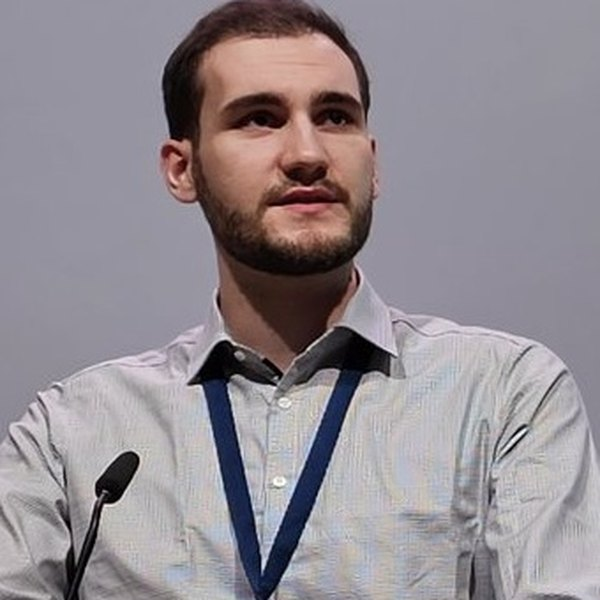

Action-conditioned dynamics
Models of relational, tabular, event-stream and telemetry state that take an action and predict a consequence.
Proposal in preparation
Factories, grids, supply chains, fleets, clinical pathways: the systems we most want to plan in are recorded rather than filmed. WMSD is about world models for that kind of state - dynamics you can roll forward under an action you choose.
The workshop
World models are moving quickly: 306 arXiv papers in 2024, 794 in 2025, and 1,530 in the first eight months of 2026. Nearly all of them are about pixels and robots.
The structured-data corner is young, and it is where the growth now is. Of the 23 world-model papers that also mention time series, 13 appeared in 2026 alone, and two thirds of the tabular ones are from the last two years. Over the same period TabPFN, Chronos, TimesFM, Moirai, KumoRFM and RelBench established that one model can transfer across schemas - all of them trained observationally, to predict rather than to act.
WMSD is organised around one question: what would it take to build action-conditioned, interventionally valid dynamics models over structured state? Concretely, what replaces the spatial inductive bias when the state is a schema - a foreign-key graph, a process topology, a causal graph, an event grammar.
arXiv abstract search, 9 September 2026.
Call for papers
Models of relational, tabular, event-stream and telemetry state that take an action and predict a consequence.
Sufficiency, abstraction and identifiability when the state is a schema rather than a grid.
Industrial process, energy systems, supply chains, scientific measurement. Rollout stability and long-horizon error.
Benchmarks that can show a rollout is wrong. Counterfactual protocols, contamination and leakage.
Where a structured-data world model does not beat a tuned baseline or a domain simulator, and why.
Domain shift, reliability, privacy, regulation and inference budgets between the benchmark and the plant floor.
Four pages, non-archival, double-blind on OpenReview, with a short-paper track for late-breaking work. Novelty is not a requirement for acceptance, and negative results are in scope. Out of scope: embodied and visual world models, and clinical trial simulation.
Programme
Caltech
Bren Professor of Computing and Mathematical Sciences. Neural operators for learning the dynamics of physical systems, and their use as fast surrogates for numerical simulation. Previously senior director of AI research at NVIDIA.
Brown University
Co-author of PLDM, one of the few papers that bridges planning and latent dynamics models, and of the Cookbook of Self-Supervised Learning with Yann LeCun. Learnable signal processing for noisy, non-stationary time series.
CWI Amsterdam
Leads the Table Representation Learning Lab at CWI and founded the Table Representation Learning workshop series at NeurIPS. Representation learning and generative models for tabular data.
Carnegie Mellon University
Alumni Research Professor of Computer Science and director of the Auton Lab. Machine learning for monitoring real systems, from public health and safety to the condition of equipment.
The challenge
One task, released with the call for papers. Given logged state, action and outcome data from a real structured system, predict the outcome of an intervention that is absent from the logs. Scored on held-out interventions, not held-out time. No interventional benchmark exists today for relational or telemetry data.
Enter as a team, or enter alone and we match you. Matching runs through February, on what you can contribute and when you are free, and every team spans at least two institutions. The leaderboard opens in March and the winners present on the day. EUR 2,000 to the winning team.
Timeline
Dates before December are projected from the ICLR 2026 cycle and will be fixed once ICLR publishes its call for workshops. The ICLR 2027 venue has not yet been announced.
Committee

Prior Labs · University of Freiburg
AI Scientist. Leads TabArena, a living benchmark for tabular machine learning, and works on evaluating tabular foundation models honestly.
ETH Zurich
Postdoctoral researcher in the Sensory-Motor Systems Lab. Learning from simulated interactions with world models, multimodal self-supervised learning for biosignals, and inductive bias in time-series pretraining.
Stanford University
PhD student in Computational and Mathematical Engineering, working on AI for science. Representation learning for time-domain high-energy astrophysics, including the discovery of a fast X-ray transient in the Chandra archive.
University of Cambridge
PhD student in the Prorok Lab, supported by a DeepMind Scholarship. ICLR 2025 on optimistic Thompson sampling for model-based RL, where the agent plans against a dynamics model that knows what it does not know.
Forgis
Co-founder. Learned models of industrial systems.
Forgis
Co-founder and Head of Research. World models for industrial process and telemetry data at scale.